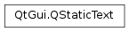

QStaticText¶
Synopsis¶
Functions¶
- def
__eq__(arg__1) - def
__ne__(arg__1) - def
performanceHint() - def
prepare([matrix=QTransform()[, font=QFont()]]) - def
setPerformanceHint(performanceHint) - def
setText(text) - def
setTextFormat(textFormat) - def
setTextOption(textOption) - def
setTextWidth(textWidth) - def
size() - def
swap(other) - def
text() - def
textFormat() - def
textOption() - def
textWidth()
Detailed Description¶
The
PySide2.QtGui.QStaticTextclass enables optimized drawing of text when the text and its layout is updated rarely.
PySide2.QtGui.QStaticTextprovides a way to cache layout data for a block of text so that it can be drawn more efficiently than by usingQPainter.drawText()in which the layout information is recalculated with every call.The class primarily provides an optimization for cases where the text, its font and the transformations on the painter are static over several paint events. If the text or its layout is changed for every iteration,
QPainter.drawText()is the more efficient alternative, since the static text’s layout would have to be recalculated to take the new state into consideration.Translating the painter will not cause the layout of the text to be recalculated, but will cause a very small performance impact on drawStaticText(). Altering any other parts of the painter’s transformation or the painter’s font will cause the layout of the static text to be recalculated. This should be avoided as often as possible to maximize the performance benefit of using
PySide2.QtGui.QStaticText.In addition, only affine transformations are supported by drawStaticText(). Calling drawStaticText() on a projected painter will perform slightly worse than using the regular drawText() call, so this should be avoided.
class MyWidget: public QWidget { public: MyWidget(QWidget *parent = 0) : QWidget(parent), m_staticText("This is static text") protected: void paintEvent(QPaintEvent *) { QPainter painter(this); painter.drawStaticText(0, 0, m_staticText); } private: QStaticText m_staticText; };The
PySide2.QtGui.QStaticTextclass can be used to mimic the behavior ofQPainter.drawText()to a specific point with no boundaries, and also whenQPainter.drawText()is called with a bounding rectangle.If a bounding rectangle is not required, create a
PySide2.QtGui.QStaticTextobject without setting a preferred text width. The text will then occupy a single line.If you set a text width on the
PySide2.QtGui.QStaticTextobject, this will bound the text. The text will be formatted so that no line exceeds the given width. The text width set forPySide2.QtGui.QStaticTextwill not automatically be used for clipping. To achieve clipping in addition to line breaks, useQPainter.setClipRect(). The position of the text is decided by the argument passed toQPainter.drawStaticText()and can change from call to call with a minimal impact on performance.For extra convenience, it is possible to apply formatting to the text using the HTML subset supported by
PySide2.QtGui.QTextDocument.PySide2.QtGui.QStaticTextwill attempt to guess the format of the input text usingQt.mightBeRichText(), and interpret it as rich text if this function returnstrue. To forcePySide2.QtGui.QStaticTextto display its contents as either plain text or rich text, use the functionQStaticText.setTextFormat()and pass in, respectively,Qt.PlainTextandQt.RichText.
PySide2.QtGui.QStaticTextcan only represent text, so only HTML tags which alter the layout or appearance of the text will be respected. Adding an image to the input HTML, for instance, will cause the image to be included as part of the layout, affecting the positions of the text glyphs, but it will not be displayed. The result will be an empty area the size of the image in the output. Similarly, using tables will cause the text to be laid out in table format, but the borders will not be drawn.If it’s the first time the static text is drawn, or if the static text, or the painter’s font has been altered since the last time it was drawn, the text’s layout has to be recalculated. On some paint engines, changing the matrix of the painter will also cause the layout to be recalculated. In particular, this will happen for any engine except for the OpenGL2 paint engine. Recalculating the layout will impose an overhead on the
QPainter.drawStaticText()call where it occurs. To avoid this overhead in the paint event, you can callPySide2.QtGui.QStaticText.prepare()ahead of time to ensure that the layout is calculated.
-
class
PySide2.QtGui.QStaticText¶ -
class
PySide2.QtGui.QStaticText(other) -
class
PySide2.QtGui.QStaticText(text) Parameters: - other –
PySide2.QtGui.QStaticText - text – unicode
Constructs an empty
PySide2.QtGui.QStaticTextConstructs a
PySide2.QtGui.QStaticTextobject which is a copy ofother.Constructs a
PySide2.QtGui.QStaticTextobject with the giventext.- other –
-
PySide2.QtGui.QStaticText.PerformanceHint¶ This enum the different performance hints that can be set on the
PySide2.QtGui.QStaticText. These hints can be used to indicate that thePySide2.QtGui.QStaticTextshould use additional caches, if possible, to improve performance at the expense of memory. In particular, setting the performance hint on thePySide2.QtGui.QStaticTextwill improve performance when using the OpenGL graphics system or when drawing to aPySide2.QtWidgets.QOpenGLWidget.Constant Description QStaticText.ModerateCaching Do basic caching for high performance at a low memory cost. QStaticText.AggressiveCaching Use additional caching when available. This may improve performance at a higher memory cost.
-
PySide2.QtGui.QStaticText.__ne__(arg__1)¶ Parameters: arg__1 – PySide2.QtGui.QStaticTextReturn type: PySide2.QtCore.boolCompares
otherto thisPySide2.QtGui.QStaticText. Returnstrueif the texts, fonts or maximum sizes are different.
-
PySide2.QtGui.QStaticText.__eq__(arg__1)¶ Parameters: arg__1 – PySide2.QtGui.QStaticTextReturn type: PySide2.QtCore.boolCompares
otherto thisPySide2.QtGui.QStaticText. Returnstrueif the texts, fonts and text widths are equal.
-
PySide2.QtGui.QStaticText.performanceHint()¶ Return type: PySide2.QtGui.QStaticText.PerformanceHintReturns which performance hint is set for the
PySide2.QtGui.QStaticText.
-
PySide2.QtGui.QStaticText.prepare([matrix=QTransform()[, font=QFont()]])¶ Parameters: - matrix –
PySide2.QtGui.QTransform - font –
PySide2.QtGui.QFont
Prepares the
PySide2.QtGui.QStaticTextobject for being painted with the givenmatrixand the givenfontto avoid overhead when the actual drawStaticText() call is made.When drawStaticText() is called, the layout of the
PySide2.QtGui.QStaticTextwill be recalculated if any part of thePySide2.QtGui.QStaticTextobject has changed since the last time it was drawn. It will also be recalculated if the painter’s font is not the same as when thePySide2.QtGui.QStaticTextwas last drawn, or, on any other paint engine than the OpenGL2 engine, if the painter’s matrix has been altered since the static text was last drawn.To avoid the overhead of creating the layout the first time you draw the
PySide2.QtGui.QStaticTextafter making changes, you can use the function and pass in thematrixandfontyou expect to use when drawing the text.See also
- matrix –
-
PySide2.QtGui.QStaticText.setPerformanceHint(performanceHint)¶ Parameters: performanceHint – PySide2.QtGui.QStaticText.PerformanceHintSets the performance hint of the
PySide2.QtGui.QStaticTextaccording to theperformanceHintprovided. TheperformanceHintis used to customize how much caching is done internally to improve performance.The default is
QStaticText.ModerateCaching.Note
This function will cause the layout of the text to require recalculation.
-
PySide2.QtGui.QStaticText.setText(text)¶ Parameters: text – unicode Sets the text of the
PySide2.QtGui.QStaticTexttotext.Note
This function will cause the layout of the text to require recalculation.
See also
-
PySide2.QtGui.QStaticText.setTextFormat(textFormat)¶ Parameters: textFormat – PySide2.QtCore.Qt.TextFormatSets the text format of the
PySide2.QtGui.QStaticTexttotextFormat. IftextFormatis set toQt.AutoText(the default), the format of the text will try to be determined using the functionQt.mightBeRichText(). If the text format isQt.PlainText, then the text will be displayed as is, whereas it will be interpreted as HTML if the format isQt.RichText. HTML tags that alter the font of the text, its color, or its layout are supported byPySide2.QtGui.QStaticText.Note
This function will cause the layout of the text to require recalculation.
-
PySide2.QtGui.QStaticText.setTextOption(textOption)¶ Parameters: textOption – PySide2.QtGui.QTextOptionSets the text option structure that controls the layout process to the given
textOption.
-
PySide2.QtGui.QStaticText.setTextWidth(textWidth)¶ Parameters: textWidth – PySide2.QtCore.qrealSets the preferred width for this
PySide2.QtGui.QStaticText. If the text is wider than the specified width, it will be broken into multiple lines and grow vertically. If the text cannot be split into multiple lines, it will be larger than the specifiedtextWidth.Setting the preferred text width to a negative number will cause the text to be unbounded.
Use
PySide2.QtGui.QStaticText.size()to get the actual size of the text.Note
This function will cause the layout of the text to require recalculation.
-
PySide2.QtGui.QStaticText.size()¶ Return type: PySide2.QtCore.QSizeFReturns the size of the bounding rect for this
PySide2.QtGui.QStaticText.
-
PySide2.QtGui.QStaticText.swap(other)¶ Parameters: other – PySide2.QtGui.QStaticTextSwaps this static text instance with
other. This function is very fast and never fails.
-
PySide2.QtGui.QStaticText.text()¶ Return type: unicode Returns the text of the
PySide2.QtGui.QStaticText.See also
-
PySide2.QtGui.QStaticText.textFormat()¶ Return type: PySide2.QtCore.Qt.TextFormatReturns the text format of the
PySide2.QtGui.QStaticText.
-
PySide2.QtGui.QStaticText.textOption()¶ Return type: PySide2.QtGui.QTextOptionReturns the current text option used to control the layout process.
-
PySide2.QtGui.QStaticText.textWidth()¶ Return type: PySide2.QtCore.qrealReturns the preferred width for this
PySide2.QtGui.QStaticText.
© 2018 The Qt Company Ltd. Documentation contributions included herein are the copyrights of their respective owners. The documentation provided herein is licensed under the terms of the GNU Free Documentation License version 1.3 as published by the Free Software Foundation. Qt and respective logos are trademarks of The Qt Company Ltd. in Finland and/or other countries worldwide. All other trademarks are property of their respective owners.